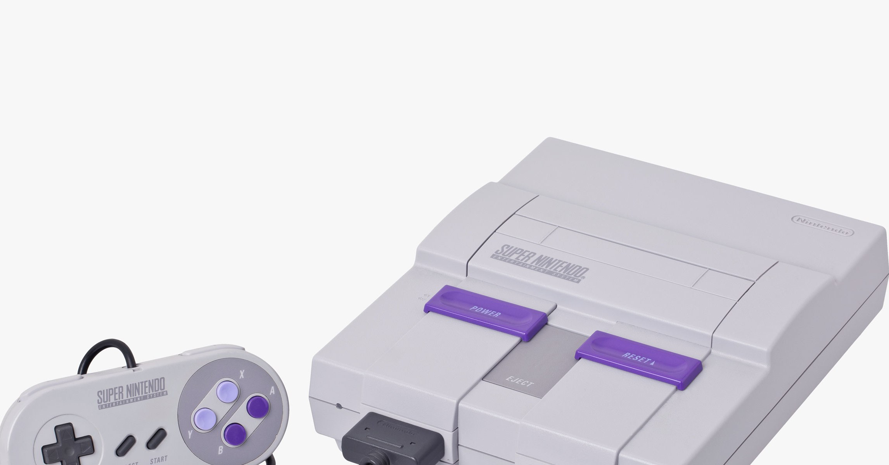

Super Nintendo
 The Super Nintendo was a 16bit console with higer resolution graphics than its older brother the 8bit NES new games were developed and older 8bit NES games were not compatible with the new and improved Super Nintendo AKA the SNES